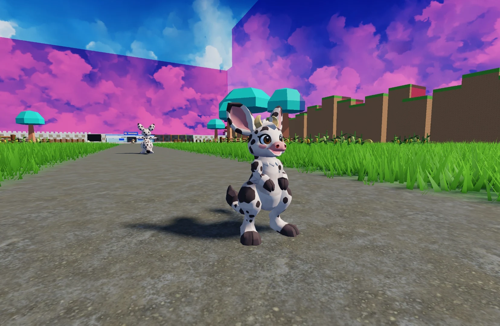
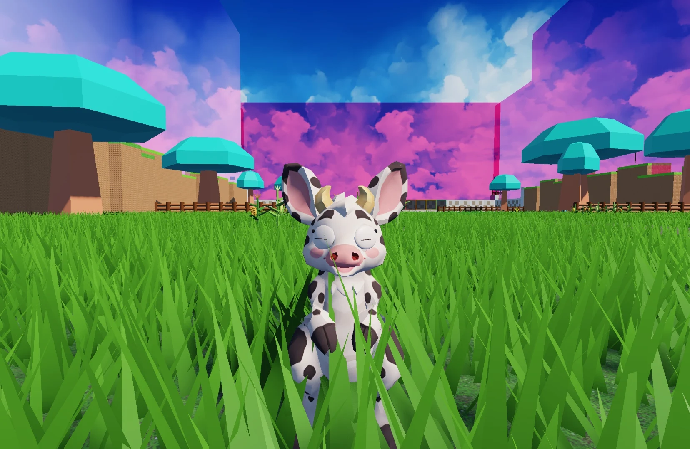
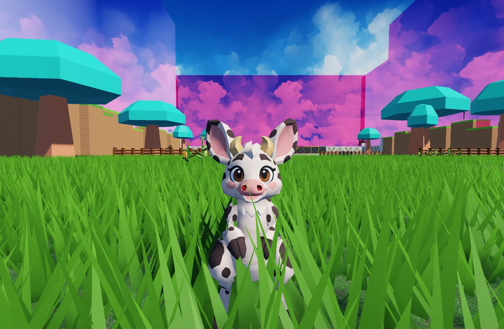
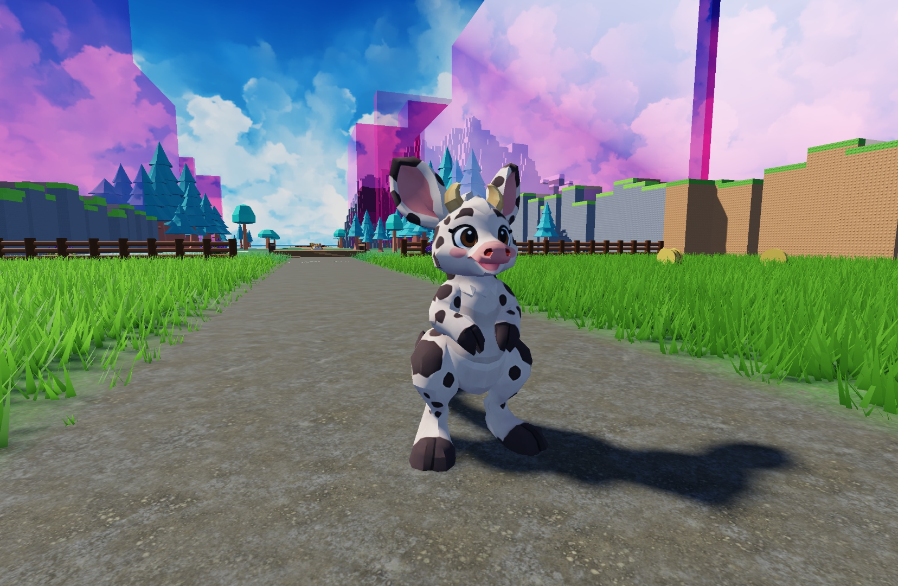
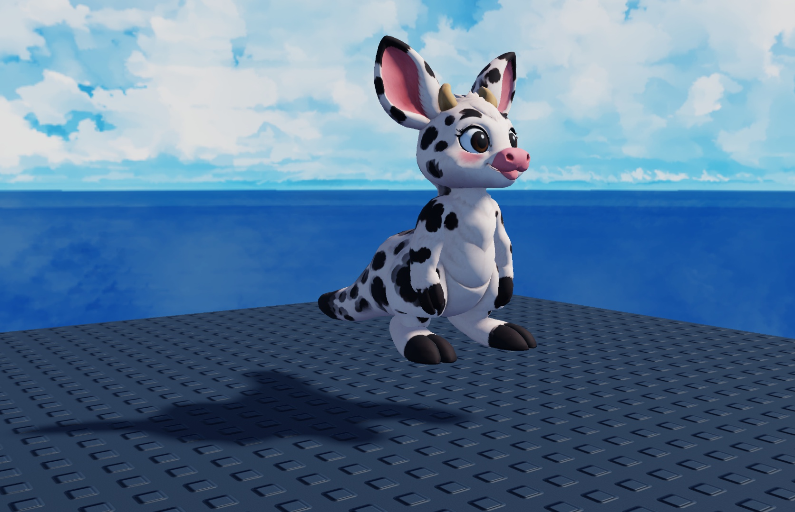
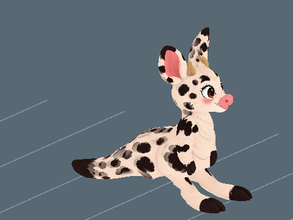

Idle
Codex review: 8.5/10
Small ear, head and tail motion with both feet settled.
Assessment of this preview at the shown speed. Separate from developer approval.
- Offline local render at the shown speed. Full movement and gameplay remain unverified.
Audio and animation previews, videos and model downloads are retained locally and are not hosted on this website. Text, assessments and still images remain available.

Perspective modelling reference · Open image for full size
A spotted hopper with tall ears, small ivory horns and a broad pink muzzle. Kangamoo holds its short hoofed forelimbs above a roomy pouch, using powerful hind legs and a thick tufted tail to bound between grassy clearings.
View parent heights, weights and calculation
🌿 Herbivore 🐾 Ground
🦘 Spring step: 20% higher jumps. Jumping uses no stamina.
One active creature total: following or mounted. Choosing another replaces the current creature.
First hatch: +2,000 Strength XP and $20,000 Cash. Later hatches: +200 Strength XP (10%), with no further discovery Cash.
One first-hatch award per player and species, shared across qualities and sizes. The certificate shows both credited amounts with the skill icon. Fixed amounts are independent of XP boosts. All hatch bonuses
Assigned game stats. The creature, egg shell and named wild egg spawning are integrated.

The egg and creature share one internal scale. Egg kg is the base creature kg times scale. All base egg dimensions multiply directly by scale, and quality chooses the scale band.
Studio Edit / Idle pose. This is the installed creature in Roblox Studio. Live gameplay acceptance remains separate. Current Kangamoo hatch model on the Farmland path in Studio Edit.



Kangamoo's 4.8-stud hatch model is installed in Studio Edit with 1,978 triangles, a 20-bone rig and matte 1K textures. The new hatch and existing 8.47-stud Farmland guardian bind separately and share the retained Idle, Walk, Run and Chase curves. The Farmland egg, $35 per second and 2,000 Strength XP for the first hatch were verified. Offline ratings apply to the shown speeds. Live gameplay remains pending. Installed Blink scored 7.3/10. Both eyes fully close and reopen. The pale lids remain visibly raised at half closure and on the closed contour.
Motion previews and downloads are retained locally. Playback starts on request so the rest of the page stays still.
These are local model renders. They do not establish live gameplay acceptance.
Small ear, head and tail motion with both feet settled.
Assessment of this preview at the shown speed. Separate from developer approval.
A low, paired hop with a short airborne phase at 1.71 studs per second.
Assessment of this preview at the shown speed. Separate from developer approval.
Higher hops and faster recoveries at 4.99 studs per second.
Assessment of this preview at the shown speed. Separate from developer approval.
The retained pursuit has a deeper load and a longer airborne phase, shown at 11.8 studs per second.
Assessment of this preview at the shown speed. Separate from developer approval.
Both painted apertures close and reopen in the offline fitted-lid render.
Assessment of this preview at the shown speed. Separate from developer approval.

Guardian of Clover Farm.
Recorded on the earlier guardian model.
2 November 2026. Patrol: 20 studs/s (5.60 metres/s) at 8.47 studs (2.37 metres) tall. The shown cycle repeats 2.49 times per second.
Longer paired-leg bounds, clear airborne recovery and a stable upper body replace rapid short hops. At this scale the retained long-bound curve produces 2.49 hops per second.
Runtime patrol fit: 8.5/10. This assessment applies to the shown patrol speed, not other actions or a saved developer decision.


|
These are offline source-skin previews at the installed guardian scale. Route turns, obstacles, water transitions and multiplayer still need in-game review. Chase and egg-return tuning are unchanged. Existing developer decisions are preserved.
Source and media provenance: Patrol review record.
| Action | GIF | MP4 |
|---|---|---|
| Idle | ||
| Walk | ||
| Run | ||
| Chase | ||
| Blink |
These are the exact reference inputs used for this creature. Some are range midpoints or explicit estimates, rather than measured population averages. Height and body length are labelled separately.
Scroll the table sideways on a narrow screen.
| Recorded input | Cow | Kangaroo | Average used |
|---|---|---|---|
| Height or body length | 1.4732 m | 1.25 m | 1.3616 m |
| Measurement type | shoulder height | standing height | Mean of the two recorded sizes |
| Weight | 680.388555 kg | 54.25 kg | 367.3192775 kg |
| How the size was recorded | 58 inches representative mature Holstein shoulder height | representative equal-sex proxy from male 1.5 m and female 1 m figures; limits are not population means | (Parent 1 size + Parent 2 size) / 2 |
| How the weight was recorded | reported typical mature Holstein cow weight of 1500 lb, matching the black-and-white cow design | equal-sex mean of midpoints: males 65 to 92 kg, females 25 to 35 kg, red kangaroo | (Parent 1 kg + Parent 2 kg) / 2 |
Matches the recorded averages and catalogue weight.
Game height is chosen for the creature design; it is not the average parent height. Individual pet height and length both multiply by saved scale. Weight uses their product, so uniform scaling remains quadratic. Values above are displayed to twelve decimal places; calculations use the full recorded values.
These ranges use the actual quality bands and shared creature scale. Most rolls are near the midpoint.
| Quality | Scale | Egg weight (kg) | Egg height (studs) | Carry speed | Pet height (studs) | Pet weight (kg) | Normal Cash / sec |
|---|---|---|---|---|---|---|---|
| Standard | 0.75 to 1.25 | 257.26 to 428.76 | 3.11 to 5.18 | 77.50 to 77.50 % | 3.60 to 6.00 | 192.94 to 535.96 | 26.25 to 43.75 |
| Fine | 1.00 to 1.50 | 343.01 to 514.52 | 4.14 to 6.21 | 77.50 to 77.50 % | 4.80 to 7.20 | 343.01 to 771.78 | 70.00 to 105.00 |
| Superior | 1.50 to 2.00 | 514.52 to 686.02 | 6.21 to 8.28 | 77.50 to 77.50 % | 7.20 to 9.60 | 771.78 to 1,372.05 | 210.00 to 280.00 |
| Epic | 2.00 to 2.50 | 686.02 to 857.53 | 8.28 to 10.35 | 77.50 to 77.50 % | 9.60 to 12.00 | 1,372.05 to 2,143.82 | 560.00 to 700.00 |
| Legendary | 2.50 to 3.00 | 857.53 to 1,029.03 | 10.35 to 12.42 | 77.50 to 77.50 % | 12.00 to 14.40 | 2,143.82 to 3,087.10 | 1,400.00 to 1,680.00 |
Clover Farm: 20% per nest slot
Base rates are per second for a creature placed at Home. Eggs still incubating and creatures in inventory do not earn. Currency starts at $0. Hatched pets placed in your Home garden pay into your wallet every second while you are online. The currency is Cash. Normal income scales with saved size and quality: Standard 1x, Fine 2x, Superior 4x, Epic 8x and Legendary 16x. Followers do not earn garden income; active petting temporarily gives the petted creature 3x. See Game mechanicsXP and skill levels for the full rules. Grim Peeper pets earn $10 per second.
Reviewed means Daniel has reviewed the in-game model and animations and is happy with them.
Daniel tells Codex when he approves how a model looks and works. Codex records Daniel's approval and updates this shared site. Reviewed shows a tick when Daniel is happy with the in-game model and animations.
Daniel: ✗ Pending
The replacement Kangamoo is installed with a 20-bone local rig and distinct Idle, Walk and Run. The recorded review did not meet the former 9/10 criterion. Rear colour-texture blur remains unresolved; trial paints were rejected and the original supplied texture is retained. Eggs, statistics, icons and saved developer decisions remain intact. Body actions require 8.5/10; Blink requires 7.5/10. Recorded scores and Needs work decisions remain unchanged pending current review.
The face icon used in the game. Labraduck also represents the Pets menu.
Full-body artwork and its matching silhouette, prepared at 256 by 256 pixels for the Pets collection.